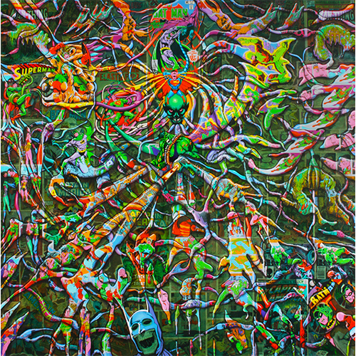

Exhibitions
Lazarus Rising, Elms Lesters Painting Rooms, London, United Kingdom, May 8–June 6, 2009.
Abstractions, Opera Gallery, New York, New York, US, September 23–October 16, 2011.
Literature
Ron English, Fauxlosophy: The Art of Ron English (San Francisco: Last Gasp, 2008), p. 154. ISBN 978-0867196566.
Ron English, Lazarus Rising (London: Elms Lesters Painting Rooms, 2009), p. 7.
Ron English, Original Grin: The Art of Ron English (Paris: Cernunnos, 2019), p. 338. ISBN 978-2374950938.
Ron English, Status Factory: The Art of Ron English (San Francisco: Last Gasp of San Francisco, 2014), p. 25. ISBN 978-0867197891.